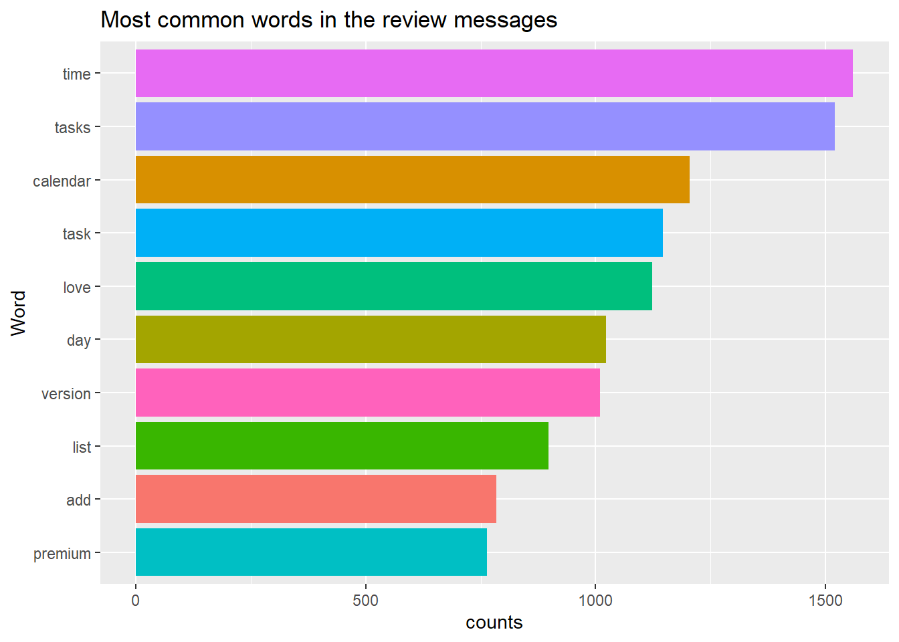
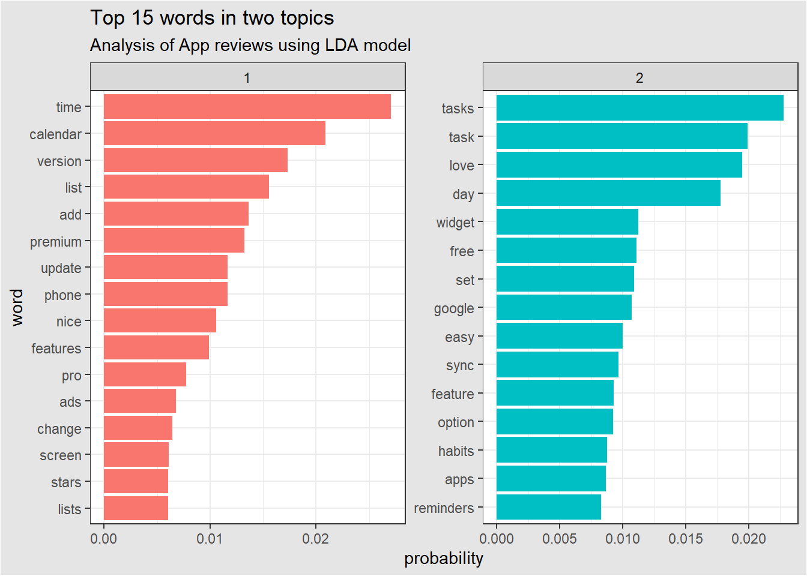

# loading necessary packagespacman::p_load( tidyverse, tidytext, topicmodels, janitor)# reading in the datareviews <-read_csv(file ="data/reviews.csv",show_col_types = F ) %>%# clean variables namesclean_names() %>%# select variables of interest and rename them accordingselect( user_name, review_message = content, rating = score, thumbs_up_count, created_at = at )# tokenize review messagereviews %>%# store output in word variableunnest_tokens(output = word, input = review_message ) %>%# remove stop wordsanti_join(stop_words, by ="word") %>%# filter obvious words in the word columnfilter(!word =="app",# also remove rows with numbers!str_detect(word, "[0-9]") ) %>%# create a review id columnrowid_to_column() -># assign to tidy_reviews tidy_reviewstidy_reviews %>%count(word, sort = T) %>%head(n =10) %>%ggplot(aes(fct_reorder(word, n), n, fill = word))+geom_col(show.legend = F)+coord_flip()+labs(title ="Most common words in the review messages",x ="Word",y ="counts" )

2 Introduction to Topic Modeling
In this section, we will move beyond word counts to uncover the underlying topics in a collection of documents. We will apply the Latent Dirichlet Allocation (LDA), which is standard topic model that searches for patterns words occurring together within and across a collection of documents, also known as a corpus.
LDA finds topics in a corpus by creating a separate bag for each document and dumping the words out to look for patterns in which words appear together - - not just in one bag but consistently across all the document-specific bags in the corpus.
Note
Note that LDA is not trying to explain or predict any dependent variable, like in a regression. Rather it is simply looking for patterns within a group of explanatory variables. This pattern search is known as Unsupervised Learning.
3 Word Probabilities
The topics themselves are a list of all the words in a corpus, often called a dictionary, with probabilities of the words appearing within each topic.
Words that appear often together will have high probabilities of occurring in one or more topics.
4 Topic Modeling vs Clustering
Because topic modeling is a type of unsupervised learning, it naturally draws comparisons from other unsupervised techniques. In particular, topic modeling is often compared to clustering, which is common in market segmentation, and other applications. It is, therefore, worth taking a moment to distinguish between these techniques.
On one hand, common clustering techniques like k-means and hierarchical clustering are based on the distance between objects, which is a continuous measure. Furthermore, each object being clustered is assigned to a single cluster.
On the other hand, topic models like LDA are based on word counts, which is a discrete measure. Furthermore, each object is a mixture or partial member of every object.
5 Document Term Matrices
Now that we have some intuition about what a topic model, and specifically what LDA is, we are ready to run a topic model. To do that we need to get comfortable navigating in and out of our tidy_reviews dataframe, starting with creating a document term matrix.
A document term matrix (DTM) has a single row for each document and a column for every unique word or term across all documents in the corpus. The values in the DTM are the counts of tokens or uses of each term for the given document.
5.1 Creating a DTM
To create a DTM, we take our tidy_reviews dataframe and count each word in each review, indicated by the rowid column. We then use cast_dtm() function from the tidytext package to easily cast our tidy dataframe into a document term matrix. To use cast_dtm(), we need to specify the document column, the term column, and the word counts, in that order.
# create a dtmreviews_dtm <- tidy_reviews %>%# count every word in each review messagecount(word, rowid) %>%# cast into dtmcast_dtm(rowid, word, n)# print dtmreviews_dtm
<<DocumentTermMatrix (documents: 112900, terms: 11661)>>
Non-/sparse entries: 112900/1316414000
Sparsity : 100%
Maximal term length: 94
Weighting : term frequency (tf)
The result is list object describing the nature of our DTM. We can see that we have 112900 documents, 11661 terms and other information like Sparsity. We can convert the DTM into a matrix using the as.matrix() function.
Warning
Due to the large number of terms in the DTM, the matrix to be created is extremely large in size and R is unable to allocate it as an object in the environment
# format into matrix # reviews_dtm_matrix <- as.matrix(reviews_dtm)# subset matrix # reviews_dtm_matrix[1:4, 334:339]
Our matrix is composed mostly of zeros.
Tip
When a matrix is composed mostly of zeros, this is called Sparsity or a Sparse Matrix.
6 Running a Topic Model
To run a topic model, we use the topicmodels package together with the tidyverse and tidytext. With a DTM as input, running a topic is straightforward.
We use the LDA() function, which requires us to supply 4 basic arguments:
the DTM input
k, which is the number of topics to be produced
the estimation method
simulation seed (as a list). Helps to recover consistent topics on repeat model runs given the probabilistic nature of the model estimation
# model runlda_output <-LDA(# model inputx = reviews_dtm,# no. of topics to returnk =2,# estimation methodmethod ="Gibbs",# simulation seed for reproducibility control =list(seed =23))# print modellda_output
A LDA_Gibbs topic model with 2 topics.
After running the model, which might take a few moments or even hours depending on the number of terms we throw at it, the output is, much like the DTM, an R object designed specifically for the topicmodels package. we can use glimpse() to display model output.
glimpse(lda_output)
Formal class 'LDA_Gibbs' [package "topicmodels"] with 16 slots
..@ seedwords : NULL
..@ z : int [1:112900] 2 1 2 1 1 2 2 2 2 2 ...
..@ alpha : num 25
..@ call : language LDA(x = reviews_dtm, k = 2, method = "Gibbs", control = list(seed = 23))
..@ Dim : int [1:2] 112900 11661
..@ control :Formal class 'LDA_Gibbscontrol' [package "topicmodels"] with 14 slots
..@ k : int 2
..@ terms : chr [1:11661] "___" "______" "_task" "_u" ...
..@ documents : chr [1:112900] "94029" "57860" "224" "70371" ...
..@ beta : num [1:2, 1:11661] -13.3 -10.9 -10.9 -13.3 -13.3 ...
..@ gamma : num [1:112900, 1:2] 0.49 0.51 0.49 0.51 0.51 ...
..@ wordassignments:List of 5
.. ..$ i : int [1:112900] 1 2 3 4 5 6 7 8 9 10 ...
.. ..$ j : int [1:112900] 1 2 3 4 5 6 6 6 7 8 ...
.. ..$ v : num [1:112900] 2 1 2 1 1 2 2 2 2 2 ...
.. ..$ nrow: int 112900
.. ..$ ncol: int 11661
.. ..- attr(*, "class")= chr "simple_triplet_matrix"
..@ loglikelihood : num -806985
..@ iter : int 2000
..@ logLiks : num(0)
..@ n : int 112900
We can use the tidy() function from the tidytext package to evaluate the model in a way that is consistent with the tidyvserse framework. This function takes the matrix of the topic probabilities and put them into a form that is easily visualized using ggplot2.
# remove scientific notation in resultsoptions(scipen =999)# tidy the topicslda_topics <- lda_output %>% tidytext::tidy(matrix ="beta")
Important
Using tidy() requires us to specify the name and structure of the piece of lda_output we want to tidy.
We can then arrange the topics in descending order of the probabilities, stored in the beta column.
lda_topics %>%arrange(desc(beta)) %>%head(n =10)
topic
term
beta
1
time
0.0270616
2
tasks
0.0227747
1
calendar
0.0208958
2
task
0.0198956
2
love
0.0194793
2
day
0.0177449
1
version
0.0173006
1
list
0.0155464
1
add
0.0136185
1
premium
0.0132538
For topic 1, the most common words include time, calendar, list, add, and premium while for topic 2, the most common words include tasks, love, and day.
Tip
If cast_dtm() allows us to navigate out of the tidy data formats to run the topic model, tidy() allows us to take the model output and navigate back into a tidy data format.
7 Interpreting Topics
Interpreting a topic model is something of an art form. Like other unsupervised learning techniques, we get a description of but not other direction as to what the topics mean.
The key is to find topics that are each different where the topics don’t repeat. In the graph below, we see the top 15 occurring words with high probabilities in two topics (k= 2).
lda_topics %>%# group data by topicsgroup_by(topic) %>%# get top 15 words in each group by betatop_n(15, beta) %>%# ungroup for easy mutationungroup() %>%mutate(# reorder term by beta for easy visualizationterm2 =fct_reorder(term, beta) ) %>%# bar plot faceted by topicggplot(aes(term2, beta, fill =as.factor(topic)))+geom_col(show.legend = F)+facet_wrap(~topic, scales ="free")+coord_flip()+labs(title ="Top 15 words in two topics",subtitle ="Analysis of App reviews using LDA model",x ="word",y ="probability" )+theme_bw()+theme(plot.background =element_rect(fill ="gray90") )

In my opinion, the first topic is about apps while the second is about performance.
Note
We name the topics based on what the words with high probabilities appear to be indicating